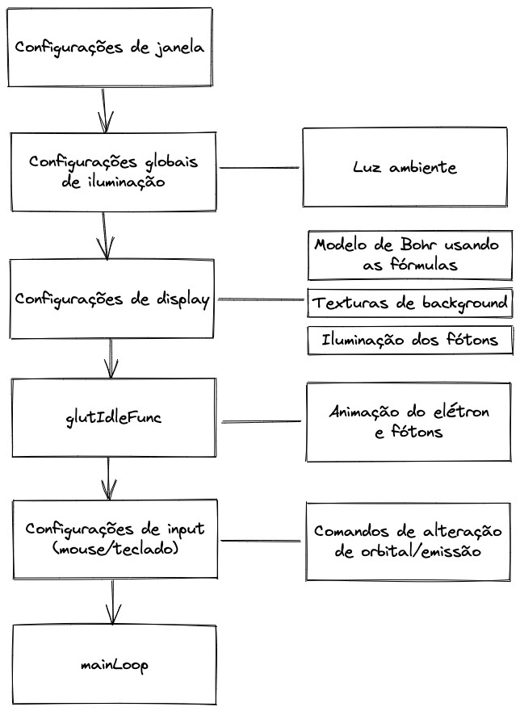

BRUNO ARAUJO SANTOS DO NASCIMENTO - 11201720606
LUIZ EDUARDO GRACINDO SILVA - 11201921251
MATHEUS VICTOR SOARES DE ARAUJO - 11201920270
VINICIUS SOUZA DE OLIVEIRA - 11201920654
VIVIANE COPEDE - 11201722075
O modelo atômico de Bohr, formulado com base no átomo de hidrogênio, foi o primeiro a introduzir as ideias de quantização de energia (Planck e Einsten) no modelo nuclear de Rutherford.
O modelo foi fundamentado através dos seguintes postulados:
O objetivo do projeto é mostrar a aplicação dos conceitos de modelagem e animação gráfica, que foram demonstrados durante os laboratórios, em um modelo atômico que todos possuem um básico conhecimento.
O projeto foi pensado e desenvolvido de maneira simples, para que um usuário leigo consiga executar o código sem grande dificuldade, e possa observar as mudanças de níveis de energia que ocorrem no modelo atômico de Bohr.
Antes de iniciar a implementação do projeto foi necessário o entendimento das principais fórmulas do Modelo de Bohr. Para isso nos baseamos nos vídeos a seguir:
E também no conteúdo da seguinte Playlist: https://www.khanacademy.org/science/physics/quantum-physics/atoms-and-electrons/v/de-broglie-wavelength
Através dos vídeos acima tivemos o entendimento básico do funcionamento do Modelo de Bohr e as principais manipulações algébricas estão listadas a seguir:
Primeiro usamos fórmulas elementares para descrever a movitação do elétron ao redor do núcleo:
O próximo passo é onde surge a genialidade de Bohr. Ele iguala o momento angular com as descobertas De Broglie mostrando que a matéria também pode se comportar como onda. E por último resolvemos para a velocidade linear
Outro ponto interessante das fórmulas anteriores é a adição da variável n que adiciona a ideia de quantização ao modelo. Essa variável só pode assumir valores positivos inteiros. A ideia por trás dessa variável é que somente raios de tamanhos especificos podem comportar perfeitamente o elétron que tenha um comportamento de onda com amplitute estavél. Essa ideia é representada na imagem a seguir:
O próximo passo foi usar a velocidade linear descoberta nas fórmulas de força anteriores. Com isso foi possível resolver para o raio:
Nesse momento já chegamos em algumas conclusões interessantes:
Conseguimos perceber que:
Porém no OpenGL usamos a velocidade angular e não a linerar. Portanto voltamos para as fórmulas de física básica para fazer essa conversão:
Substituindo v e r na fórmula da velocidade angular chegamos nas seguintes fórmulas usadas no projeto
Com isso chegamos às fórmulas que são usadas no nosso projeto:
Para a segunda etapa do projeto, também incluimos a emissão e absorção de elétrons de acordo com as mudanças nos níveis de energia. Diferentes mudanças de níveis de energia emitem fótons de diferentes tonalidades. Para saber a tonalidade resultante usamos a Fórmula Balmer que da os comprimentos de ondas visiveis que são causados quando o elétron pula entre as camadas da imagem a seguir:
A seguir temos a Fórmula Balmer:
Ela nos da comprimentos de onda como mostra a imagem a seguir:
Como OpenGL trabalha com valores de cores entre 0 e 1, também foi necessário criar uma função para fazer a conversão dos valores de comprimentos de ondas para RGB. Mais informações sobre como isso funciona podem ser encontradas no link a seguir: https://www.fourmilab.ch/documents/specrend/
E aqui há uma visualização da função de conversão:
O diagrama de blocos a seguir representa de maneira resumida o funcionamento do nosso sistema:
Link do diagrama: https://excalidraw.com/#json=3hDjswOzdmAV5Drum8gr8,BvwDkdHcE1N8LjssXyqz8Q
O modelo segue um pipeline comum à gráficos mais simples e pode ser dividido em 4 etapas fundamentais:
Configuração de Display e Objetos:
Onde os objetos que compõem o desenho gráfico são definidos e configurados para a cena, bem como as transformações e o controle da stack de transformações.
funções callback e controle de cena.
Onde definimos e/ou instanciamos funções de dinâmica da cena, i.e, incrementam posição, ângulo, ou escala etc. Outras funções específicas de fluxo e visualização.
funções controle de interação (Input)
As interações com usuário (via teclado, por exemplo) executam ações predefinidas para o modelo, no código, toda interação possível/desejada é configurada.
função main e render em loop.
A função main organiza o chamado a todas as outras funções do fluxo, e em particular, a glutMainLoop() garante que o pipeline gráfico permaneça executando até ser finalizado manualmente.
Para a construção do modelo atômico de Bohr utilizamos a linguagem c++ com a biblioteca do OpenGL. E para esse desenvolvimento foi necessário configurar para termos profundidade (ser 3D).
Como queríamos dar a visão atômica com o núcleo ao centro e o elétron rotacionando em seu entorno, optamos pela configuração da câmera como está ao lado.
Para criar o deutério, utilizamos três objetos, sendo: 1 próton (de coloração vermelha), 1 neutro (de coloração azul escuro) e 1 elétron (de coloração azul claro).
Os objetos são esferas sólidas que têm uma movimentação baseada nas Fórmulas de Bohr. Logo, o núcleo se movimenta e o elétron, com seu spin (rotação no próprio eixo) e a rotação em torno do núcleo com seu respectivo nível de energia.
Utilizando as teclas “w”, “s”, Up ou Down, é possível subir o nível de energia do átomo ou diminuir, ficando de 1 a 3.
A rotação utiliza o tempo como fator de incremento do eixo rotacional para não termos grandes diferenças de velocidade de execução do script em diferentes ambientes.
Vídeo do funcionamento do programa:
https://pt.wikipedia.org/wiki/%C3%81tomo_de_Bohr
https://www.youtube.com/watch?v=PhFYMf70GrQ
https://www.inf.pucrs.br/~manssour/OpenGL/
https://moodle.ufabc.edu.br/course/view.php?id=4002
https://www.physicslens.com/angular-velocity/